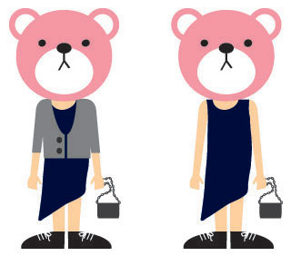
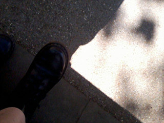
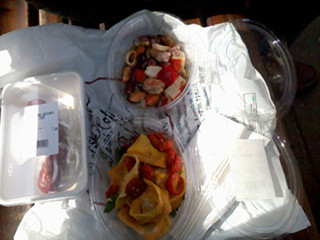
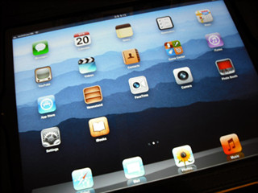
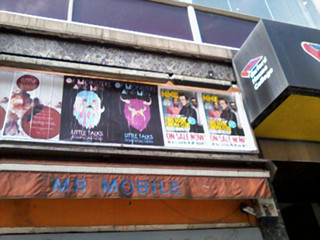

#01
토요일 sleeveless 원피스 첨으로 입어봤다 +_+
쵸딩이후로 첨..........OTL
그동안 꾸역꾸역 가디건이나 자켓을 위에 걸치고 다녔는데
더위에는 장사없드라
토요일날 무진장 더웠음;; 결국 가디건 벗어던지구
민소매로 돌아댕겼다 :-D
역시 첨이 어색하고 어렵제 나중에는 신경안쓰게 되더라 ^^***
게다가 느므 시원해 ㅜㅜ
기념(←;;;)으로 사진찍어둘걸;ㅂ;
대신 콤콤으로 대체
토욜날 입었던건 COS원피스
이 브랜드 입을수록 맘에든다 +_+
그냥 옷만 보면 무진장 심심한데 입으면 늠이쁘다//
이번에 COS원피스만 세벌 질렀다능 - 그중 두개가 sleeveless
어........언능 미션 클리어(?)를 해야함!!! +_+
(이말은 즉 아직도 모셔두기만하고 개시안했단 소리..........OTL)

죠 원피스 길이가 애매한데다 비대칭이라
플랫은 영 아니었는데
그렇다고 힐을 신자니 이날 많이 걸어야했구
해서 그 더위에 꾸역꾸역 닥터마틴을 신고나갔다능 ^^;;;;
이날 사치갤러리 한번 더 댕겨왔다 :)

전시구경하기 전에 우선 배를 채워야한다!!
피크닉 소원풀었다능
여름이야 여름~~ ㅜㅂㅜ
#02
Holiday Diet
2주전 스페인으로 휴가를 떠나는 V여사는
휴가떠나기전 일주일동안 비키니를 위해
야채쥬스/수프/샐러드만 먹는 강도높은 다이어트를 했는데
누가 홈메이드 컵케키를 가져와서 내밀자 단박에 '꺼졋!!' 이라고 외쳤다능 ㅋㅋㅋ
다들 V날씬한데 왜~ 다이어트 필요없어~라고 말리다가
V여사의 해변가에서 20살 어린애기들이랑 같이 비키니입고 서있어야할텐데
다이어트 해야해!!! 라는 외침에 어쩐지 다들 납득 ㅋㅋㅋㅋㅋㅋ
그리고 그때 나능 좋~다고 컵케키 우걱우걱 먹고있었..........OTL
이 이야기를 하믄서 나........나도 Holiday Diet 할겨!! 라고하니까
동생곰은 부질없는 저항말라고 해줬음;; 냉정한넘ㅋㅋㅋㅋㅋ
25일부터 일주일동안 KENT지역 시골마을에서 뒹굴거릴 예정
비키니도 사놨다 희희희
일끝나고 집에와서도 바로 컴퓨터하는 훼인이라
컴퓨터랑 좀 떨어질 필요를 느낀다 ㅡㅡ;;;;;
노트북도 안가져가구 가서 책보구 그림그리믄서 뒹굴뒹굴 할테다
#03

iPad가 생겼따 +_+
그동안 살까말까 고민만 백만번 하다가
있음 좋긴한데 그닥 이걸 main으로 쓸거같지않아
없어도 딱히 아쉬운게 없고..........라는 생각으로
매번 구입문턱까지 갔다가 포기하고 그랬었는데^^;;;
회사에서 하나 받았당 이히히히히히
사실 난 iPad로 프레젠테이션하구 미팅하구 그럴일이 많이없어서
걍 가지고 놀라고 준거나 마찬가지 ㅋㅋㅋㅋㅋㅋㅋ
잽싸게 포토샵터치와 몇 드로잉어플을 구입하구
줄기차게 앵그리버드랑 데드스페이스 플레이중(←응?)
.............iPad용 펜을 구입해야겠다;;;
#04

센트럴에서 우연히 발견한
Of Monsters and Men 포스터
수요일날 공연간다 +_+ 헷헷
11월 맨순+롭좀비 공연
12월 gary numan공연도 예매완료
하반기도 훈늉하다!!!!!